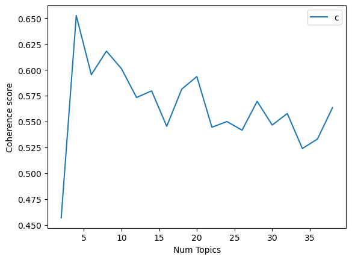
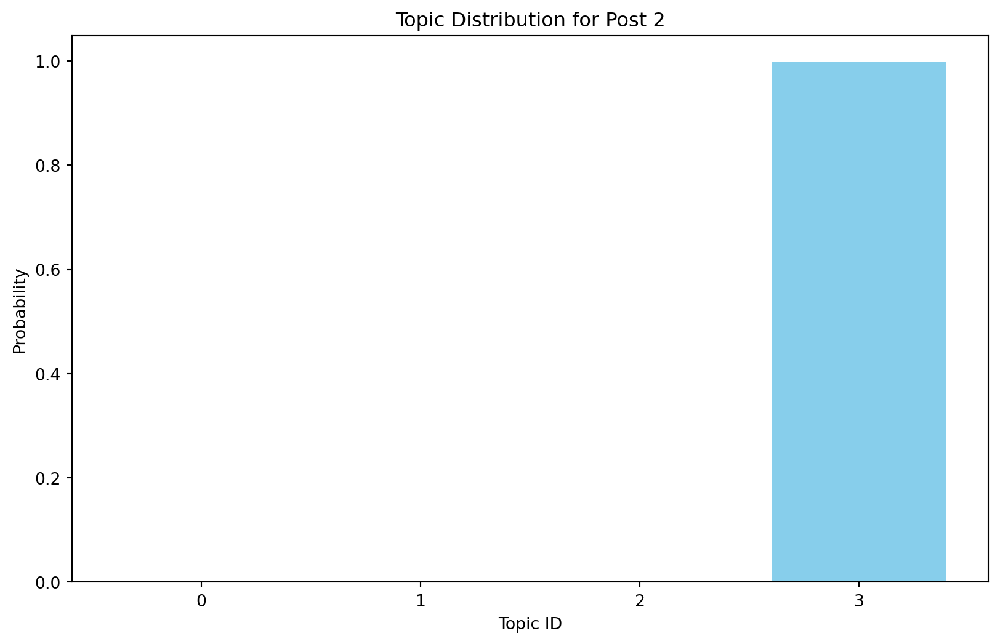
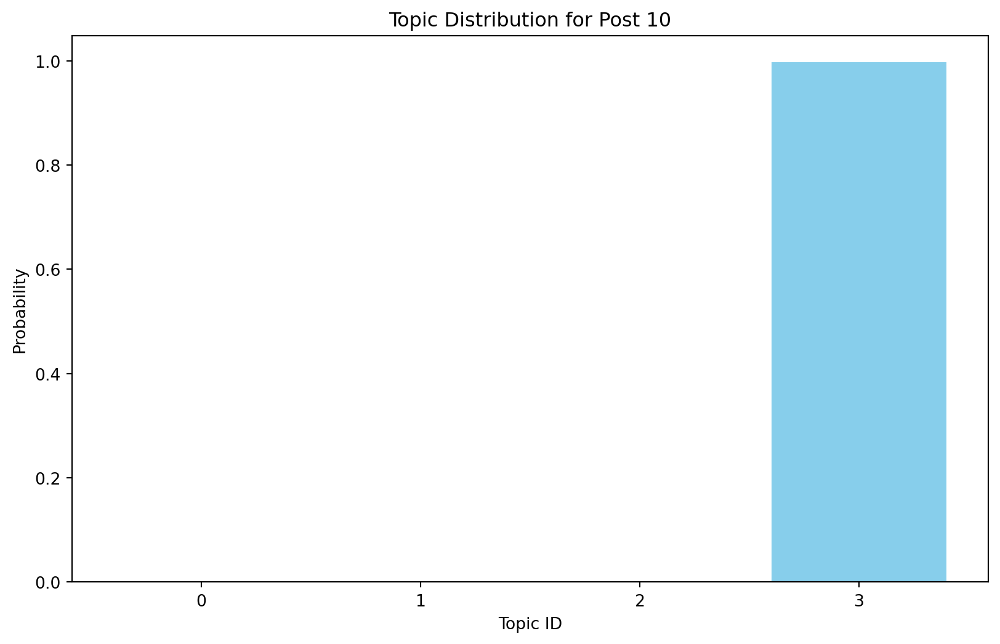
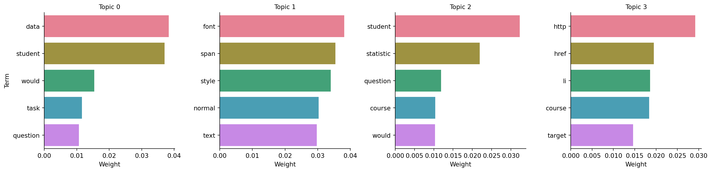

This case study walkthrough extends previous research and evaluation work at the Friday Institute for Educational Innovation at North Carolina State University. In addition to many other areas of inquiry, this work was aimed at understanding and improving peer interaction and discussion in the Friday Institute’s Massively Open Online Courses for Educators (MOOC-Ed) and Online Professional Learning programs. To learn more about these courses and programs, visit: https://place.fi.ncsu.edu
Walkthrough Focus
Our focus will be on identifying “topics” by examining how words cohere into different latent, or hidden, themes based on patterns of co-occurrence of words within documents. With a bit of tongue-in-cheek, Meeks and Weingart (2012) describe topic modeling as:
…focused on corpora and not individual texts, treating the works themselves as unceremonious ‘buckets of words,’ and providing seductive but obscure results in the forms of easily interpreted (and manipulated) ‘topics’…. To achieve its results, it leverages occult statistical methods like ‘dirichlet priors’ and ‘bayesian models.’
That being said, Weingart also noted that “a topic model is a”clever and exceptionally versatile little algorithm that can be customized to all sorts of applications” and Bail (2020) add that topic modeling can be “a powerful tool for identifying general trends in a corpus that can then be analyzed in a more granular manner using other techniques.”
As noted by Krumm and Means (2018), the workflow for topic modeling is not always a linear process and there is often a great deal of iteration that occurs within and between wrangling, exploring, modeling. In this case study, we will primarily explore our data after the modeling process in order to gain some additional insight into the topics generated by our model. Specifically, this walkthrough covers the following concepts and skills:
Prepare: Prior to analysis, we’ll take a quick look at some of the related MOOC-Ed research and evaluation work to gain some context for our analysis. This should aid in the interpretation of our results and help guide some decisions as we tidy, model, and visualize our data.
Wrangle: In section 2, we again preprocess text such as tokenizing, removing stop words and lemmatizing using the nltk library. Other than these, there are two more essential steps to preprocess the text for topic modeling, which are creating a dictionary by using corpora.Dictionary and a corpus by using doc2bow() function, both steps will use gensim library.
Model: We take a look at the most popular topic modeling algorithms: Latent Dirichlet Allocation (LDA) and using gensim library to implement the model. We also use coherence score approach to find the optimal number of topics for the LDA model.
Explore: To further explore the results of our topic model, we use pyLDAvis for visualizing and exploring the discovered topics such as finding the dominate topics for each document, finding the dominate words for each topic, and finding the dominate documents for each topic.
1. PREPARE
To help us better understand the context, questions, and data sources we’ll be using, this section will focus on the following topics:
Context. As context for our analysis, we’ll review several related papers by my colleagues relevant to the analysis of MOOC-Ed discussion forums.
Questions. We’ll also examine what insight topic modeling can provide to a question that we asked participants answer in their professional learning teams (PLTs).
Project Setup. We will set up a “home’ environment for the files and codes for lab 3 by installling and importing the required libraries for the topic modeling walkthrough.
1a. Context
Participating in a MOOC and Professional Learning Team: How a Blended Approach to Professional Development Makes a Difference
Teaching Statistics Through Data Investigations MOOC-Ed
Massive Open Online Courses for Educators (MOOC-Eds) provide opportunities for using research-based learning and teaching practices, along with new technological tools and facilitation approaches for delivering quality online professional development. The Teaching Statistics Through Data Investigations MOOC-Ed was built for preparing teachers in pedagogy for teaching statistics, and it has been offered to participants from around the world. During 2016-2017, professional learning teams (PLTs) were formed from a subset of MOOC-Ed participants. These teams met several times to share and discuss their learning and experiences. This study focused on examining the ways that a blended approach to professional development may result in similar or different patterns of engagement to those who only participate in a large-scale online course. Results show the benefits of a blended learning environment for retention, engagement with course materials, and connectedness within the online community of learners in an online professional development on teaching statistics. The findings suggest the use of self-forming autonomous PLTs for supporting a deeper and more comprehensive experience with self-directed online professional developments such as MOOCs. Other online professional development courses, such as MOOCs, may benefit from purposely suggesting and advertising, and perhaps facilitating, the formation of small face-to-face or virtual PLTs who commit to engage in learning together.
Data Source & Analysis
All peer interaction, including peer discussion, take place within discussion forums of MOOC-Eds, which are hosted using the Moodle Learning Management System. To build the dataset you’ll be using for this walkthrough, the research team wrote a query for Moodle’s MySQL database, which records participants’ user-logs of activity in the online forums. This sql query combines separate database tables containing postings and comments including participant IDs, timestamps, discussion text and other attributes or “metadata.”
For further description of the forums and data retrieval process, see also the following papers:
The following highlight some key findings related to the discussion forums in the papers cited above:
MOOCs designed specifically for K-12 teachers can provide positive self-directed learning experiences and rich engagement in discussion forums that help form online communities for educators.
Analysis of discussion forum data in TSDI provided a very clear picture of how enthusiastic many PLT members and leaders were to talk to others in the online community. They posed their questions and shared ideas with others about teaching statistics throughout the units, even though they were also meeting synchronously several times with their colleagues in small group PLTs.
Findings on knowledge construction demonstrated that over half of the discussions in both courses moved beyond sharing information and statements of agreement and entered a process of dissonance, negotiation and co-construction of knowledge, but seldom moved beyond this phase in which new knowledge was tested or applied. These findings echo similar research on difficulties in promoting knowledge construction in online settings.
Topic modeling provides more interpretable and cohesive models for discussion forums than other popular unsupervised modeling techniques such as k-means and k-medoids clustering algorithms.
What are the similarities and differences between how PLT members and Non-PLT online participants engage and meet course goals in a MOOC-Ed designed for educators in secondary and collegiate settings?
Dr. Hollylynne Lee and the TSDI team also developed a facilitation guide designed specifically for PLT teams to help groups synthesize the ideas in the course and make plans for how to implement new strategies in their classroom in order to impact students’ learning of statistics. One question PLT members were asked to address was:
What ideas or issues emerged in the discussion forums this past week?
For this walkthrough, we will further examine that question through the use of topic modeling.
One overarching question that Silge and Robinson (2018) identify as a central question to text mining and natural language processing, is:
How do we to quantify what a document or collection of documents is about?
1c. Set Up
First, let’s load the following libraries that we’ll be needing for this walkthrough:
pandas: a powerful and widely-used Python library for data manipulation and analysis. It provides data structures and functions needed to work seamlessly with structured data, such as tables and time series.
nltk: a suite of libraries and programs for symbolic and statistical natural language processing for English written in the Python programming language. It supports classification, tokenization, stemming, tagging, parsing, and semantic reasoning functionalities.
gensim: a Python library designed for natural language processing (NLP) tasks such as topic modeling, document indexing, and similarity retrieval, particularly with large text corpora. Gensim provides efficient implementations of popular topic modeling algorithms such as Latent Dirichlet Allocation (LDA) and Latent Semantic Analysis (LSA).
matplotlib: a comprehensive library for creating static, animated, and interactive visualizations in Python. It is widely used across various scientific and engineering disciplines to create high-quality graphs, charts, and plots.
seaborn: a Python data visualization library based on matplotlib. It provides a high-level interface for drawing attractive and informative statistical graphics.
pyLDAvis: a Python library used for interactive visualization of topic models. It is designed to help users interpret the topics in a topic model that has been fit to a corpus of text data. The package extracts information from a fitted LDA topic model to inform an interactive web-based visualization.
Requirement already satisfied: pandas in /opt/anaconda3/lib/python3.11/site-packages (2.1.4)
Requirement already satisfied: nltk in /opt/anaconda3/lib/python3.11/site-packages (3.8.1)
Requirement already satisfied: gensim in /opt/anaconda3/lib/python3.11/site-packages (4.3.0)
Requirement already satisfied: matplotlib in /opt/anaconda3/lib/python3.11/site-packages (3.8.0)
Requirement already satisfied: seaborn in /opt/anaconda3/lib/python3.11/site-packages (0.12.2)
Requirement already satisfied: pyLDAvis in /opt/anaconda3/lib/python3.11/site-packages (3.4.1)
Requirement already satisfied: numpy<2,>=1.23.2 in /opt/anaconda3/lib/python3.11/site-packages (from pandas) (1.26.4)
Requirement already satisfied: python-dateutil>=2.8.2 in /opt/anaconda3/lib/python3.11/site-packages (from pandas) (2.8.2)
Requirement already satisfied: pytz>=2020.1 in /opt/anaconda3/lib/python3.11/site-packages (from pandas) (2023.3.post1)
Requirement already satisfied: tzdata>=2022.1 in /opt/anaconda3/lib/python3.11/site-packages (from pandas) (2023.3)
Requirement already satisfied: click in /opt/anaconda3/lib/python3.11/site-packages (from nltk) (8.1.7)
Requirement already satisfied: joblib in /opt/anaconda3/lib/python3.11/site-packages (from nltk) (1.2.0)
Requirement already satisfied: regex>=2021.8.3 in /opt/anaconda3/lib/python3.11/site-packages (from nltk) (2023.10.3)
Requirement already satisfied: tqdm in /opt/anaconda3/lib/python3.11/site-packages (from nltk) (4.65.0)
Requirement already satisfied: scipy>=1.7.0 in /opt/anaconda3/lib/python3.11/site-packages (from gensim) (1.11.4)
Requirement already satisfied: smart-open>=1.8.1 in /opt/anaconda3/lib/python3.11/site-packages (from gensim) (5.2.1)
Requirement already satisfied: FuzzyTM>=0.4.0 in /opt/anaconda3/lib/python3.11/site-packages (from gensim) (2.0.9)
Requirement already satisfied: contourpy>=1.0.1 in /opt/anaconda3/lib/python3.11/site-packages (from matplotlib) (1.2.0)
Requirement already satisfied: cycler>=0.10 in /opt/anaconda3/lib/python3.11/site-packages (from matplotlib) (0.11.0)
Requirement already satisfied: fonttools>=4.22.0 in /opt/anaconda3/lib/python3.11/site-packages (from matplotlib) (4.25.0)
Requirement already satisfied: kiwisolver>=1.0.1 in /opt/anaconda3/lib/python3.11/site-packages (from matplotlib) (1.4.4)
Requirement already satisfied: packaging>=20.0 in /opt/anaconda3/lib/python3.11/site-packages (from matplotlib) (23.1)
Requirement already satisfied: pillow>=6.2.0 in /opt/anaconda3/lib/python3.11/site-packages (from matplotlib) (10.2.0)
Requirement already satisfied: pyparsing>=2.3.1 in /opt/anaconda3/lib/python3.11/site-packages (from matplotlib) (3.0.9)
Requirement already satisfied: jinja2 in /opt/anaconda3/lib/python3.11/site-packages (from pyLDAvis) (3.1.3)
Requirement already satisfied: numexpr in /opt/anaconda3/lib/python3.11/site-packages (from pyLDAvis) (2.8.7)
Requirement already satisfied: funcy in /opt/anaconda3/lib/python3.11/site-packages (from pyLDAvis) (2.0)
Requirement already satisfied: scikit-learn>=1.0.0 in /opt/anaconda3/lib/python3.11/site-packages (from pyLDAvis) (1.2.2)
Requirement already satisfied: setuptools in /opt/anaconda3/lib/python3.11/site-packages (from pyLDAvis) (68.2.2)
Requirement already satisfied: pyfume in /opt/anaconda3/lib/python3.11/site-packages (from FuzzyTM>=0.4.0->gensim) (0.3.1)
Requirement already satisfied: six>=1.5 in /opt/anaconda3/lib/python3.11/site-packages (from python-dateutil>=2.8.2->pandas) (1.16.0)
Requirement already satisfied: threadpoolctl>=2.0.0 in /opt/anaconda3/lib/python3.11/site-packages (from scikit-learn>=1.0.0->pyLDAvis) (2.2.0)
Requirement already satisfied: MarkupSafe>=2.0 in /opt/anaconda3/lib/python3.11/site-packages (from jinja2->pyLDAvis) (2.1.3)
Requirement already satisfied: simpful in /opt/anaconda3/lib/python3.11/site-packages (from pyfume->FuzzyTM>=0.4.0->gensim) (2.12.0)
Requirement already satisfied: fst-pso in /opt/anaconda3/lib/python3.11/site-packages (from pyfume->FuzzyTM>=0.4.0->gensim) (1.8.1)
Requirement already satisfied: typing-extensions in /opt/anaconda3/lib/python3.11/site-packages (from pyfume->FuzzyTM>=0.4.0->gensim) (4.9.0)
Requirement already satisfied: miniful in /opt/anaconda3/lib/python3.11/site-packages (from fst-pso->pyfume->FuzzyTM>=0.4.0->gensim) (0.0.6)
import pandas as pdimport nltkimport gensimimport matplotlibimport seaborn as snsimport pyLDAvis
2. WRANGLE
Data wrangling involves some combination of cleaning, reshaping, transforming, and merging data (Wickham & Grolemund, 2017). We’ll preprocess the data as follows to get it ready for topic modeling.
Import Data. We’ll be working with .csv files and use read_csv() function to load data into our working environment.
Subset Columns and Rows. We will filter the dataset and only includes the columns and rows of interests.
Prepare Data for LDA modeling.
Step 1: Tokenize Text and Remove Stop Words. Tokenization and stop words removals are often the first steps in preparing the text data for further exploring or modeling, including the LDA topic modeling.
Step 2: Lemmatization. It is another crucial step that helps in normalizing the text data, reducing words to their base or root form. In the case of topic modeling, it enhances the model’s ability to identify the underlying topics.
Step 3: Create a Dictionary. The dictionary assigns a unique integer ID to each unique word in the dataset. This ID is used to create a numerical representation of the text, which is important for text mining including LDA topic modeling, as they always operate on numerical representations of the text (e.g., the ID) rather than the raw text itself.
Step 4: Create a Corpus. Build upon the dictionary, the corpus represents the text data with words count besides the IDs. In the form of a corpus, each document is represented as a list of tuples (word_id, word_count), which is necessary for LDA to perform its computations.
2a. Import Forum Data
To get started, we need to import, or “read”, our data into Python. The function used to import your data will depend on the file format of the data you are trying to import. Let’s read our data into our Environment using the read_csv() function and assign it to a variable name so we can work with it like any other object in Python.
To get an overview, we can display the ts_forum_data data frame. You can find that the data frame includes course information (e.g., course_id, course_name), discussion forum information (e.g., forum_id, discussion_id), and more importantly, the post information (e.g., post_id, post_title, post_content).
ts_forum_data
course_id
course_name
forum_id
forum_name
discussion_id
discussion_name
discussion_creator
discussion_poster
discussion_reference
parent_id
post_date
post_id
post_title
post_content
0
9.0
Teaching Statistics Through Data Investigatio...
126.0
Investigate: Analyze Tasks
6822.0
Not much comparison...
4513.0
4963.0
4513.0
16374.0
15/10/05 20:48:10
16597.0
Re: Not much comparison...
I also like the Coke vs. Pepsi problem becaus...
1
9.0
Teaching Statistics Through Data Investigatio...
126.0
Investigate: Analyze Tasks
6822.0
Not much comparison...
4513.0
5009.0
4513.0
16374.0
15/10/05 16:13:40
16480.0
Re: Not much comparison...
By far the best activity as a whole was Pepsi...
2
9.0
Teaching Statistics Through Data Investigatio...
126.0
Investigate: Analyze Tasks
6822.0
Not much comparison...
4513.0
4409.0
4513.0
16374.0
15/10/06 05:53:59
16754.0
Re: Not much comparison...
Hello Clark I felt the same way...the Pepsi...
3
9.0
Teaching Statistics Through Data Investigatio...
126.0
Investigate: Analyze Tasks
6822.0
Not much comparison...
4513.0
4854.0
4513.0
16374.0
15/10/09 00:12:00
17414.0
Re: Not much comparison...
I definitely agree: there are not much compar...
4
9.0
Teaching Statistics Through Data Investigatio...
126.0
Investigate: Analyze Tasks
6822.0
Not much comparison...
4513.0
4116.0
4513.0
16374.0
15/10/09 20:41:22
17568.0
Re: Not much comparison...
I agree that the Pepsi vs. Coke experiment wa...
...
...
...
...
...
...
...
...
...
...
...
...
...
...
...
5784
76.0
Teaching Statistics Through Inferential Reason...
950.0
Discuss With Colleagues
25295.0
Summer assignment
3712.0
3712.0
NaN
0.0
17/12/03 18:06:41
66550.0
Summer assignment
I give a summer assignment to my students bef...
5785
76.0
Teaching Statistics Through Inferential Reason...
950.0
Discuss With Colleagues
25607.0
Strategies
9671.0
9671.0
NaN
0.0
17/12/07 22:53:53
67158.0
Strategies
One strategy that I've implemented in the use...
5786
76.0
Teaching Statistics Through Inferential Reason...
950.0
Discuss With Colleagues
25607.0
Strategies
9671.0
16592.0
9671.0
67158.0
17/12/14 19:33:33
68019.0
Re: Strategies
Thank you this is good information.
5787
76.0
Teaching Statistics Through Inferential Reason...
950.0
Discuss With Colleagues
25822.0
Available information
14611.0
14611.0
NaN
0.0
17/12/11 17:56:18
67531.0
Available information
I have enjoyed learning throughout this cours...
5788
76.0
Teaching Statistics Through Inferential Reason...
950.0
Discuss With Colleagues
26300.0
Integrating inferential reasoning into everything
4537.0
4537.0
NaN
0.0
17/12/17 00:49:33
68285.0
Integrating inferential reasoning into everything
From this course I learned that inferential re...
5789 rows × 14 columns
2b. Subset Columns and Rows
The post_content will be the text from which we will discover the topics, and post_id as the identifier could be useful, so those two columns will be the columns of interests, so let’s subset column and create a post_content data frame. Also, the rows with missing values will not contribute to the topics, so let’s drop it out.
# Select 'post_id' and 'post_content' columnspost_content = ts_forum_data[['post_id', 'post_content']]# Rename the columns to 'id' and 'document'post_content.columns = ['id', 'document']# Drop rows with missing values in the 'document' columnpost_content.dropna(subset=['document'], inplace=True)# Display the resulting DataFrameprint(post_content)
id document
0 16597.0 I also like the Coke vs. Pepsi problem becaus...
1 16480.0 By far the best activity as a whole was Pepsi...
2 16754.0 Hello Clark I felt the same way...the Pepsi...
3 17414.0 I definitely agree: there are not much compar...
4 17568.0 I agree that the Pepsi vs. Coke experiment wa...
... ... ...
5784 66550.0 I give a summer assignment to my students bef...
5785 67158.0 One strategy that I've implemented in the use...
5786 68019.0 Thank you this is good information.
5787 67531.0 I have enjoyed learning throughout this cours...
5788 68285.0 From this course I learned that inferential re...
[5787 rows x 2 columns]
/var/folders/_3/45612wnj07v1x0p_l6mqmjkw0000gn/T/ipykernel_65626/508170866.py:8: SettingWithCopyWarning:
A value is trying to be set on a copy of a slice from a DataFrame
See the caveats in the documentation: https://pandas.pydata.org/pandas-docs/stable/user_guide/indexing.html#returning-a-view-versus-a-copy
2c. Prepare Data for LDA Model
In this session, we will processing text and transforming our data frames into new data structures required for topic modeling, in the case of using gensim for LDA topic modeling, the needed data structure is the bag of word (BoW) format which will be the corpus data frame that we will end with after this session.
Step 1: Tokenize Text & Remove Stop Words
We are already familiar with the tokization process from the last two labs. Tokenization and stop words removals are always the first step for most Natural Language Processing (NLP) models, including LDA. It involves splitting the text into individual words or tokens and remove nonsense ones, which are the basic units for analysis. Let’s tokenize and remove stop wordsour forum text and by using the familiar tokenize() and stopwords:
from nltk.tokenize import word_tokenizefrom nltk.tokenize import RegexpTokenizerfrom nltk.corpus import stopwords# Ensure nltk punkt tokenizer and stopwords are downloadednltk.download('punkt')nltk.download('stopwords')# Create a tokenizer instance with the regular expression of tweetstweet_pattern =r'\b\w+\b'tokenizer = RegexpTokenizer(tweet_pattern)# Specify stop wordsstop_words =set(stopwords.words('english'))# Tokenize the 'document' column, remove stop words, and create a new column 'word'post_content['word'] = post_content['document'].apply(lambda x: [token.lower() for token in tokenizer.tokenize(str(x)) if token.lower() notin stop_words])# Explode the 'word' column to transform each row into individual wordspost_content_exploded = post_content.explode('word')# Display the resulting DataFrameprint(post_content_exploded)# Explode the 'word' column to transform each row into individual wordspost_content_exploded = post_content.explode('word')# Display the resulting DataFrameprint(post_content_exploded)
[nltk_data] Downloading package punkt to /Users/minzhuang/nltk_data...
[nltk_data] Package punkt is already up-to-date!
[nltk_data] Downloading package stopwords to
[nltk_data] /Users/minzhuang/nltk_data...
[nltk_data] Package stopwords is already up-to-date!
/var/folders/_3/45612wnj07v1x0p_l6mqmjkw0000gn/T/ipykernel_65626/3185371319.py:17: SettingWithCopyWarning:
A value is trying to be set on a copy of a slice from a DataFrame.
Try using .loc[row_indexer,col_indexer] = value instead
See the caveats in the documentation: https://pandas.pydata.org/pandas-docs/stable/user_guide/indexing.html#returning-a-view-versus-a-copy
id document word
0 16597.0 I also like the Coke vs. Pepsi problem becaus... also
0 16597.0 I also like the Coke vs. Pepsi problem becaus... like
0 16597.0 I also like the Coke vs. Pepsi problem becaus... coke
0 16597.0 I also like the Coke vs. Pepsi problem becaus... vs
0 16597.0 I also like the Coke vs. Pepsi problem becaus... pepsi
... ... ... ...
5788 68285.0 From this course I learned that inferential re... work
5788 68285.0 From this course I learned that inferential re... inferential
5788 68285.0 From this course I learned that inferential re... reasoning
5788 68285.0 From this course I learned that inferential re... throughout
5788 68285.0 From this course I learned that inferential re... course
[267868 rows x 3 columns]
id document word
0 16597.0 I also like the Coke vs. Pepsi problem becaus... also
0 16597.0 I also like the Coke vs. Pepsi problem becaus... like
0 16597.0 I also like the Coke vs. Pepsi problem becaus... coke
0 16597.0 I also like the Coke vs. Pepsi problem becaus... vs
0 16597.0 I also like the Coke vs. Pepsi problem becaus... pepsi
... ... ... ...
5788 68285.0 From this course I learned that inferential re... work
5788 68285.0 From this course I learned that inferential re... inferential
5788 68285.0 From this course I learned that inferential re... reasoning
5788 68285.0 From this course I learned that inferential re... throughout
5788 68285.0 From this course I learned that inferential re... course
[267868 rows x 3 columns]
Now let’s do a quick word count to see some of the most common words used throughout the forums.
# Count the occurrences of each wordwords_count = post_content_exploded['word'].value_counts().reset_index()words_count.columns = ['word', 'count']# Print the word count of the top 20 wordsprint("Top 20 words and their counts:")print(words_count.head(20))
Top 20 words and their counts:
word count
0 students 6843
1 data 4371
2 statistics 3107
3 would 2693
4 think 2049
5 course 1690
6 like 1526
7 school 1500
8 use 1472
9 questions 1470
10 class 1426
11 also 1411
12 font 1311
13 span 1267
14 time 1253
15 one 1219
16 style 1178
17 could 1116
18 normal 1031
19 really 1014
Terms like “students,” “data,” and “class” are about what we would have expected from a course teaching statistics. The term “agree” and “time” however, are not so intuitive and worth a quick look as well.
Comprehension Check
Use the str.contains() function to filter for rows in our post_content data frame that contain the term “time” and another term or terms of your choosing. After filtering, select a random sample of 10 posts using the sample() function for your terms and answer the following questions:
What, if anything, do these posts have in common?
What topics or themes might be apparent, or do you anticipate emerging, from our topic modeling?
Your output should look something like this:
# Filter to get rows where text contains the word 'time'post_with_time = post_content[post_content['document'].str.contains('time')]# Select a random sample of 10 rowstime = post_with_time.sample(n=10, random_state=42)# Print the random sampleprint(time)
id document \
3879 39597.0 I agree with you Rebecca. I had a project las...
4402 49972.0 The Google form is a great idea. I taught a ...
1479 13978.0 In my experience working with teachers and st...
5062 67502.0 Yes! I can't begin to tell you how many time...
1731 20891.0 I too wondered about the age since younger s...
559 17316.0 I'm right there with you Sonia and Ronald! I...
2675 34142.0 so much! 1) I think we need to use good task...
256 13055.0 Hello Mario: Yes on the Unit 1 there is lin...
3711 40969.0 I was thinking this as well Craig! My AP st...
1114 21640.0 I totally agree with you! All the tools and ...
word
3879 [agree, rebecca, project, last, year, algebra,...
4402 [google, form, great, idea, taught, class, 50,...
1479 [experience, working, teachers, students, prob...
5062 [yes, begin, tell, many, times, year, hear, st...
1731 [wondered, age, since, younger, students, migh...
559 [right, sonia, ronald, creative, comes, making...
2675 [much, 1, think, need, use, good, tasks, allow...
256 [hello, mario, yes, unit, 1, link, website, ga...
3711 [thinking, well, craig, ap, students, think, a...
1114 [totally, agree, tools, especially, videos, pr...
Step 2: Lemmatize
Lemmatization is a crucial step in preparing our text data for topic modeling. It reduces words to their base or root form. For example, the lemma of the words “running”, “runs”, and “ran” is “run”. By grouping similar words under one token, it will make the analysis more efficient, and improve the coherence of the topics identified by the model.
To lemmatize the word, we will introduce the WordNetLemmatizer class. One important notice here, the lemmatizer expects input that is composed of characters (strings) and can be interpreted as words. If you pass non-string data, such as floats, to the lemmatizer, it may encounter errors because it doesn’t know how to interpret these data types as words.
If there is a post content like “A class as large as that 300 is impossibly…”, after tokenizing, the ‘300’ will be one of the tokens. Surrounded by quotation marks, the ‘300’ is still string, while after exploding, the 300 will be recognized as integer data type by Python, it is no longer the string.
Therefore, before applying lemmatization or any other text processing technique, it’s important to ensure that your data consists of strings.
# Convert float values to strings in the 'word' columnpost_content_exploded['word'] = post_content_exploded['word'].astype(str)
Now we can lemmatize using WordNetLemmatizer from nltk library.
from nltk.stem import WordNetLemmatizer# Ensure NLTK resources are downloadednltk.download('wordnet')# Initialize the WordNetLemmatizerlemmatizer = WordNetLemmatizer()# Apply lemmatization to the 'word' columnpost_content_exploded['lemmatized_word'] = post_content_exploded['word'].apply(lambda x: lemmatizer.lemmatize(x))# Display the resulting DataFrameprint(post_content_exploded)
[nltk_data] Downloading package wordnet to
[nltk_data] /Users/minzhuang/nltk_data...
[nltk_data] Package wordnet is already up-to-date!
id document word \
0 16597.0 I also like the Coke vs. Pepsi problem becaus... also
0 16597.0 I also like the Coke vs. Pepsi problem becaus... like
0 16597.0 I also like the Coke vs. Pepsi problem becaus... coke
0 16597.0 I also like the Coke vs. Pepsi problem becaus... vs
0 16597.0 I also like the Coke vs. Pepsi problem becaus... pepsi
... ... ... ...
5788 68285.0 From this course I learned that inferential re... work
5788 68285.0 From this course I learned that inferential re... inferential
5788 68285.0 From this course I learned that inferential re... reasoning
5788 68285.0 From this course I learned that inferential re... throughout
5788 68285.0 From this course I learned that inferential re... course
lemmatized_word
0 also
0 like
0 coke
0 v
0 pepsi
... ...
5788 work
5788 inferential
5788 reasoning
5788 throughout
5788 course
[267868 rows x 4 columns]
Step 3: Create a Dictionary
The dictionary maps each word in our dataset to a unique integer ID. This is important because LDA modeling operates on numerical representations of the text (e.g., the ID) rather than the raw text itself. And the dictionary helps to track the entire vocabulary, making it easier to manage and manipulate the text data.
To create the dictionary, we will use the corpora.Dictionary from gensim library. Notice that the input of corpora.Dictionary should be the lists of token list for each document (in our case, the document refers to the post). So let’s convert the lemmatized words back to lists for each post, then create a dictionary.
from gensim import corpora# Convert the lemmatized words back to lists for each documentlemmatized_documents = post_content_exploded.groupby('document')['lemmatized_word'].apply(list).tolist()# Create a Dictionarydictionary = corpora.Dictionary(lemmatized_documents)# Print the dictionary# print(dictionary.token2id) # This will print the token to id mapping
Step 4: Create a Corpus
Now we get a dictionary by mapping the words with IDs as one of the numerical representation of text data. The word counts is another important numerical representation which is necessary for LDA to perform its computations.
The corpus combines the IDs and word count together to represent the text data, which is a list of documents, where each document is represented as a list of tuples (word_id, word_count). This format is known as the bag-of-words (BoW) format.
Bag-of-Words (BoW): The BoW simplifies the text data by representing the number of occurrences of each word in the document without considering the word order. This simplification is suitable for topic modeling and lots of other text mining tasks.
To create a corpus, we will apply the doc2bow() function on the dictionary that we just created.
# Create a corpus: BOW representation of each documentcorpus = [dictionary.doc2bow(doc) for doc in lemmatized_documents]# Print the corpus# print(corpus) # This will print the id to count mapping
LDA requires the input data in the form of a corpus, where each document is represented as a list of (word_id, word_count) tuples. This input format allows LDA to calculate the distribution of topics in each document and the distribution of words in each topic. As we already get the corpus, we are ready to perform the LDA modeling.
3. MODEL
In very simple terms, modeling involves developing a mathematical summary of a dataset. These summaries can help us further explore trends and patterns in our data.
In their book, Learning Analytics Goes to School, Krumm and Means (2018) describe two general types of modeling approaches used in the Data-Intensive Research workflow: unsupervised and supervised machine learning. In distinguishing between the two, they note:
Unsupervised learning algorithms can be used to understand the structure of one’s dataset. Supervised models, on the other hand, help to quantify relationships between features and a known outcome. Known outcomes are also commonly referred to as labels or dependent variables.
In Section 3 we focus on Topic Modeling, an unsupervised learning approach to automatically identify topics in a collection of documents. In fact, we’ll explore the most popular approach to topic modeling - LDA, as well as strategies for identifying the “right” number of topics:
Fitting a Topic Modeling with LDA. In this section we learn to use the LdaModel function for unsupervised classification of our forum discussions to find natural groupings of words, or topics.
Choosing K. Finally, we wrap up Section 3 by learning about diagnostic properties like exclusivity, semantic coherence, and held out likelihood for helping to select an appropriate number of topics.
3a. Fitting a Topic Modeling with LDA
Before running our first topic model using the LdaModel function, let’s learn some basic principles behind LDA and why LDA is of preferred over other automatic classification or clustering approaches.
Unlike simple forms of cluster analysis such as k-means clustering, LDA is a “mixture” model, which in our context means that:
Every document contains a mixture of topics. Unlike algorithms like k-means, LDA treats each document as a mixture of topics, which allows documents to “overlap” each other in terms of content, rather than being separated into discrete groups. So in practice, this means that a discussion forum post could have an estimated topic proportion of 70% for Topic 1 (e.g. be mostly about a Topic 1), but also be partly about Topic 2.
Every topic contains a mixture of words. For example, if we specified in our LDA model just 2 topics for our discussion posts, we might find that one topic seems to be about pedagogy while another is about learning. The most common words in the pedagogy topic might be “teacher”, “strategies”, and “instruction”, while the learning topic may be made up of words like “understanding” and “students”. However, words can be shared between topics and words like “statistics” or “assessment” might appear in both equally.
Similar to k-means other other simple clustering approaches, however, LDA does require us to specify a value of k for the number of topics in our corpus. Selecting k is no trivial matter and can greatly impact your results.
Since so far we don’t have a have strong rationale about the number of topics that might exist in discussion forums, let’s use the nunique() function from the pandas library to find the number of unique forum names in our course data and run with that:
# Find the number of unique valuesunique_forum_count = ts_forum_data['forum_name'].nunique()# Print count of unique valuesprint(unique_forum_count)
22
Since it looks like there are 22 distinct discussion forums, we’ll use that as our value for the num_topics = argument of the LdaModel. Be patient while this runs, since the default setting of is to perform a large number of iterations.
from gensim.models.ldamodel import LdaModel# Build the LDA modellda_model = LdaModel(corpus, num_topics=22, id2word=dictionary, passes=15)# Print the topicsfor idx, topic in lda_model.print_topics(-1):print(f"Topic: {idx}\nWords: {topic}")
Notice that the passes parameter specifies the number of times the entire corpus will be used to update the LDA model’s parameters and improve the quality of the topic distributions during training. This is part of the process known as “epochs” in other machine learning contexts. If not specified, the default value for passes is typically 1, here we choose 15. Increasing the number of passes can lead to a more accurate and stable model because the model has more opportunities to refine its parameters. However, more passes also mean longer training times.
3b. Finding optimal K - num_topics
As alluded to earlier, selecting the number of topics for your model is a non-trivial decision and can dramatically impact your results. Bail (2018) notes that
The results of topic models should not be over-interpreted unless the researcher has strong theoretical apriori about the number of topics in a given corpus, or if the researcher has carefully validated the results of a topic model using both the quantitative and qualitative techniques described above.
There are several approaches to estimating a value for K and we’ll take a quick look at coherence score approach. The coherence score measures the degree of semantic similarity between high scoring words in the topic. The idea is to find a number of topics that maximizes the coherence score. The gensim library provides CoherenceModel that we can use to compute the coherence scores.
Notice that the CoherenceModel will take a while to run. The output looks like this:

As a general rule of thumb and overly simplistic heuristic, we’re looking for an inflection point in our plot which indicates an optimal number of topics to select for a value of K. Let’s select the model with highest coherence value, and print out the topics identified the optimal model.
# # Select the model with highest coherence value# optimal_model = model_list[coherence_values.index(max(coherence_values))]# optimal_num_topics = x[coherence_values.index(max(coherence_values))]# print(f"Optimal number of topics: {optimal_num_topics}")# # # Print the topics of the optimal model# topics = optimal_model.print_topics(num_words=10)# for topic in topics:# print(topic)
The optimal number of topics is 4. In the next session, we will explore the lda model with 4 topics.
from gensim.models.ldamodel import LdaModel# Build the optimal LDA modeloptimal_model = LdaModel(corpus, num_topics=4, id2word=dictionary, passes=15)# Print the topicsfor idx, topic in lda_model.print_topics(-1):print(f"Topic: {idx}\nWords: {topic}")
Silge and Robinson (2018) note that fitting at topic model is the “easy part.” The hard part is making sense of the model results and that the rest of the analysis involves exploring and interpreting the model using a variety of approaches which we’ll walkthrough in in this section.
Bail (2018) cautions, however, that:
…post-hoc interpretation of topic models is rather dangerous… and can quickly come to resemble the process of “reading tea leaves,” or finding meaning in patterns that are in fact quite arbitrary or even random.
4a. Visualizing Topics by pyLDAvis
Visualization is always a good way to explore the modeling results. The pyLDAvis is primarily designed for visualizing the results of LDA topic modeling, it provides an interactive dashboard that helps users interpret the topics discovered by LDA.
Let’s use to pyLDAvis to create one.
import pyLDAvisimport pyLDAvis.gensim# Prepare the visualizationvis = pyLDAvis.gensim.prepare(optimal_model, corpus, dictionary)# Display the visualizationpyLDAvis.display(vis)
4b. Finding the Dominant Topic for Each Document
One of the practical applications of topic modeling is to determine the main topic of a given document. Let’s explore it by using get_document_topics function from gensim and visualize the first 10 document with its dominant topics:
import matplotlib.pyplot as plt# Get the topic distribution for the first 10 documentstopic_dist_first_10 = [optimal_model.get_document_topics(doc, minimum_probability=0.0) for doc in corpus[:10]]# Iterate over the first 10 documentsfor i, doc_topic_dist inenumerate(topic_dist_first_10):# Extract topic ids and their probabilities doc_topics, doc_probs =zip(*doc_topic_dist)# Plot the topic probabilities for the document plt.figure(figsize=(10, 6)) plt.bar(doc_topics, doc_probs, color='skyblue') plt.xlabel('Topic ID') plt.ylabel('Probability') plt.title(f'Topic Distribution for Post {i+1}') plt.xticks(doc_topics) plt.show()


4c. Finding the Dominant Words for Each Topic
By merely knowing the dominant topic ID for a document from last session, obviously, it’s not very easy to interpret what the topics exactly are, so let’s examine the top 5 terms for each topic and then look at this information visually:
# Extract the top 5 terms for each topic from the LDA modeltopics = optimal_model.show_topics(formatted=False, num_words=5)topics_dict = {topic_num: [(word, round(weight, 4)) for word, weight in words] for topic_num, words in topics}# Convert the dictionary to a DataFrame for easier visualizationtopics_df = pd.DataFrame(topics_dict).Ttopics_df.columns = [f'Term {i+1}'for i inrange(5)]topics_df['Topic'] = topics_df.indextopics_df = topics_df.melt(id_vars='Topic', var_name='Term Rank', value_name='Term and Weight')# Split 'Term and Weight' column into separate 'Term' and 'Weight' columnstopics_df[['Term', 'Weight']] = pd.DataFrame(topics_df['Term and Weight'].tolist(), index=topics_df.index)# Drop the 'Term and Weight' column as it's no longer neededtopics_df.drop(columns=['Term and Weight'], inplace=True)# Display the DataFrameprint(topics_df.head(10))
Topic Term Rank Term Weight
0 0 Term 1 data 0.0383
1 1 Term 1 font 0.0381
2 2 Term 1 student 0.0323
3 3 Term 1 http 0.0292
4 0 Term 2 student 0.0370
5 1 Term 2 span 0.0354
6 2 Term 2 statistic 0.0219
7 3 Term 2 href 0.0195
8 0 Term 3 would 0.0154
9 1 Term 3 style 0.0340
From the data frame generated, we can visualize now:
import seaborn as sns# Create the FacetGridg = sns.FacetGrid(topics_df, col="Topic", col_wrap=4, sharex=False, sharey=False, height=4)# Map the bar plot to each subplotg.map_dataframe(sns.barplot, x='Weight', y='Term', palette='husl', orient='h')# Customize the plotg.set_titles(col_template='Topic {col_name}')g.set_axis_labels("Weight", "Term")plt.tight_layout()plt.show()
/opt/anaconda3/lib/python3.11/site-packages/seaborn/_oldcore.py:1498: DeprecationWarning:
is_categorical_dtype is deprecated and will be removed in a future version. Use isinstance(dtype, pd.CategoricalDtype) instead
/opt/anaconda3/lib/python3.11/site-packages/seaborn/_oldcore.py:1498: DeprecationWarning:
is_categorical_dtype is deprecated and will be removed in a future version. Use isinstance(dtype, pd.CategoricalDtype) instead
/opt/anaconda3/lib/python3.11/site-packages/seaborn/_oldcore.py:1498: DeprecationWarning:
is_categorical_dtype is deprecated and will be removed in a future version. Use isinstance(dtype, pd.CategoricalDtype) instead
/opt/anaconda3/lib/python3.11/site-packages/seaborn/_oldcore.py:1498: DeprecationWarning:
is_categorical_dtype is deprecated and will be removed in a future version. Use isinstance(dtype, pd.CategoricalDtype) instead
/opt/anaconda3/lib/python3.11/site-packages/seaborn/_oldcore.py:1498: DeprecationWarning:
is_categorical_dtype is deprecated and will be removed in a future version. Use isinstance(dtype, pd.CategoricalDtype) instead
/opt/anaconda3/lib/python3.11/site-packages/seaborn/_oldcore.py:1498: DeprecationWarning:
is_categorical_dtype is deprecated and will be removed in a future version. Use isinstance(dtype, pd.CategoricalDtype) instead
/opt/anaconda3/lib/python3.11/site-packages/seaborn/_oldcore.py:1498: DeprecationWarning:
is_categorical_dtype is deprecated and will be removed in a future version. Use isinstance(dtype, pd.CategoricalDtype) instead
/opt/anaconda3/lib/python3.11/site-packages/seaborn/_oldcore.py:1498: DeprecationWarning:
is_categorical_dtype is deprecated and will be removed in a future version. Use isinstance(dtype, pd.CategoricalDtype) instead
/opt/anaconda3/lib/python3.11/site-packages/seaborn/_oldcore.py:1498: DeprecationWarning:
is_categorical_dtype is deprecated and will be removed in a future version. Use isinstance(dtype, pd.CategoricalDtype) instead
/opt/anaconda3/lib/python3.11/site-packages/seaborn/_oldcore.py:1498: DeprecationWarning:
is_categorical_dtype is deprecated and will be removed in a future version. Use isinstance(dtype, pd.CategoricalDtype) instead
/opt/anaconda3/lib/python3.11/site-packages/seaborn/_oldcore.py:1498: DeprecationWarning:
is_categorical_dtype is deprecated and will be removed in a future version. Use isinstance(dtype, pd.CategoricalDtype) instead
/opt/anaconda3/lib/python3.11/site-packages/seaborn/_oldcore.py:1498: DeprecationWarning:
is_categorical_dtype is deprecated and will be removed in a future version. Use isinstance(dtype, pd.CategoricalDtype) instead
/opt/anaconda3/lib/python3.11/site-packages/seaborn/_oldcore.py:1498: DeprecationWarning:
is_categorical_dtype is deprecated and will be removed in a future version. Use isinstance(dtype, pd.CategoricalDtype) instead

4d. Finding the Dominate Documents for Each Topic
Now that we have a sense of the most common words associated with each topic, let’s further explore the dominate documents for each topic:
# Initialize a list to store topic distributions for each documenttopic_distributions = [optimal_model.get_document_topics(doc, minimum_probability=0.0) for doc in corpus]# Identify the dominant topics for each documentdominant_topics = [(sorted(topic_distribution, key=lambda x: x[1], reverse=True)[0], i)for i, topic_distribution inenumerate(topic_distributions)]# Create DataFrame from the list of dominant topicsdf_dominant_topic = pd.DataFrame(dominant_topics, columns=['Dominant_Topic', 'Document_No'])df_dominant_topic['Topic_ID'] = df_dominant_topic['Dominant_Topic'].apply(lambda x: x[0])df_dominant_topic['Topic_Probability'] = df_dominant_topic['Dominant_Topic'].apply(lambda x: x[1])# Ensure the original DataFrame has a unique identifier for each documentpost_content_exploded['Document_No'] = post_content_exploded.index# Merge with the original DataFrame to get the text of the dominant documentsdf_dominant_topic = df_dominant_topic.merge(post_content_exploded[['Document_No', 'document']], on='Document_No', how='left')# Create a function to get the top N unique documents for each topicdef get_top_n_documents_grouped(df, n=3):# Sort by Topic_Probability within each group and take the top N unique documents top_n_docs = df.groupby('Topic_ID').apply(lambda group: group.nlargest(n, 'Topic_Probability').drop_duplicates(subset='document'))return top_n_docs# Get the top 3 unique documents for each topictop_n_docs_unique = get_top_n_documents_grouped(df_dominant_topic, n=3)# Display the first three dominant documents for each topicfor topic in top_n_docs_unique['Topic_ID'].unique():print(f"Topic {topic}:") top_docs = top_n_docs_unique[top_n_docs_unique['Topic_ID'] == topic].nlargest(3, 'Topic_Probability')for _, row in top_docs.iterrows():print(f"Document No: {row['Document_No']} - Probability: {row['Topic_Probability']}")print(row['document'])print()
Topic 0:
Document No: 1018 - Probability: 0.9958457946777344
This is a great discussion! Every representation has its difficulty for both the learner the user and the interpreter. Box plots can both show interesting features like variation but can also hide features in a distribution like clumps! I do an activity in my class (shared with me by my colleague Helen Doerr at Syracuse Univ.) that gets students to think about this issue. There are 4 boxplots and 12 dotplots. The task is to make an argument for each dotplot which boxplot could be used to represent the same data set or if there are NO boxplots that are re-representations of the distribution. Students have to sort these at their table in small groups and then we discuss in whole groups. I have attached two word docs that have large and small versions of the graphs. As a matter of practice I never keep an \answer key\" so that I always have to freshly engage with the task each time I use it! :-) Here are a few resources for further reading. related to school students learning to use boxplots: <a href=\"https://www.stat.auckland.ac.nz/~iase/publications/rt04/4.2_Bakker_etal.pdf\" target=\"_blank\">https://www.stat.auckland.ac.nz/~iase/publications/rt04/4.2_Bakker_etal.pdf</a> There have been several articles in the American Statistician over the years related to use of boxplots in the DOING of statistics and several statisticians that have proposed variations of a boxplot for new ways to represent data. I can give links to a few abstracts but you do need a subscription or a local library account to read these. (sorry I can't post the PDFs) 1978 <a href=\"http://amstat.tandfonline.com/doi/abs/10.1080/00031305.1978.10479236\" target=\"_blank\">http://amstat.tandfonline.com/doi/abs/10.1080/00031305.1978.10479236</a> 1989 <a href=\"http://www.tandfonline.com/doi/abs/10.1080/00031305.1989.10475612\" target=\"_blank\">http://www.tandfonline.com/doi/abs/10.1080/00031305.1989.10475612</a> 1999 <a href=\"http://amstat.tandfonline.com/doi/abs/10.1080/00031305.1999.10474494\" target=\"_blank\">http://amstat.tandfonline.com/doi/abs/10.1080/00031305.1999.10474494</a> ANd here is a PDF of an article from the Journal of Statistical Software suggesting an alternative version of a boxplot they call a beanplot <a href=\"ftp://cran.wu-wien.ac.at/pub/R/web/packages/beanplot/vignettes/beanplot.pdf\" target=\"_blank\">ftp://cran.wu-wien.ac.at/pub/R/web/packages/beanplot/vignettes/beanplot.pdf</a> "
Topic 1:
Document No: 190 - Probability: 0.9996916651725769
I think Television Time is good data to work with esp with children. Though I did wonder if it would do even better with grade 5 children. I would also like to give the data in a tabular form and get the children to plot it in different ways. It will be reinforcement of the types of graphical representations as well.
Topic 2:
Document No: 5123 - Probability: 0.9951109886169434
I find that when students are working with technology in general they are more receptive and in their element. This is a great way to get students excited about learning.
Topic 3:
Document No: 81 - Probability: 0.9994556307792664
Lana you are right! The louder and brighter - the better for the students. This teacher thinks like that at times too! I really liked the fact that this assignment requires the students to pay attention to detail and think \outside the box\". "
Takeaway
In addition to some useful Python packages and functions for the actual process of topic modeling, hopefully there are two main lessons I’m hoping you take away from this walkthrough:
Topic modeling requires a lot of decisions. Beyond deciding on a value for K, there are a number of key decisions that you have to make that can dramatically affect your results. For example, to stem or not to stem? What qualifies as a document? What flavor or topic modeling is best suited to your data and research questions? How many iterations to run?
Topic modeling is as much art as (data) science. As Bail (2018) noted, the term “topic” is somewhat ambitious, and topic models do not produce highly nuanced classification of texts. Once you’ve fit your model, interpreting your model requires some mental gymnastics and ideally some knowledge of the context from which the data came to help with interpretation of your topics. Moreover, the quantitative approaches for making the decisions highlighted above are imperfect and a good deal of human judgment required.
Comprehension Check
Using the LDA model with a different value for K, use the approaches demonstrated in Section 4 to explore and interpret your topics and terms and revisit the following question:
Now that you have a little more context, how might you revise your initial interpretation of some of the latent topics or latent themes from your model?